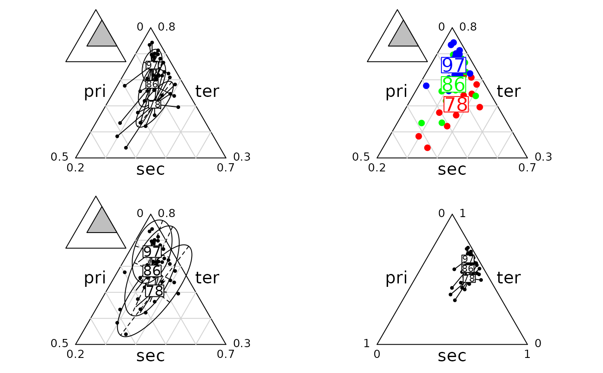

Triangular Representation and Groups of points
triangle.class.RdFunction to plot triangular data (i.e. dataframe with 3 columns of
positive or null values) and a partition
Usage
triangle.class(ta, fac, col = rep(1, length(levels(fac))),
wt = rep(1, length(fac)), cstar = 1, cellipse = 0, axesell = TRUE,
label = levels(fac), clabel = 1, cpoint = 1, pch = 20, draw.line = TRUE,
addaxes = FALSE, addmean = FALSE, labeltriangle = TRUE, sub = "", csub = 1,
possub = "bottomright", show.position = TRUE, scale = TRUE, min3 = NULL,
max3 = NULL)Arguments
- ta
a data frame with 3 columns of null or positive numbers
- fac
a factor of length the row number of
ta- col
a vector of color for showing the groups
- wt
a vector of row weighting for the computation of the gravity centers by class
- cstar
a character size for plotting the stars between 0 (no stars) and 1 (complete star) for a line linking a point to the gravity center of its belonging class.
- cellipse
a positive coefficient for the inertia ellipse size
- axesell
a logical value indicating whether the ellipse axes should be drawn
- label
a vector of strings of characters for the labels of gravity centers
- clabel
if not NULL, a character size for the labels, used with
par("cex")*clabel- cpoint
a character size for plotting the points, used with
par("cex")*cpoint. If zero, no points are drawn- pch
if
cpoint> 0, an integer specifying the symbol or the single character to be used in plotting points- draw.line
a logical value indicating whether the triangular lines should be drawn
- addaxes
a logical value indicating whether the axes should be plotted
- addmean
a logical value indicating whether the mean point should be plotted
- labeltriangle
a logical value indicating whether the varliable labels of
tashould be drawn on the triangular sides- sub
a string of characters for the graph title
- csub
a character size for plotting the graph title
- possub
a string of characters indicating the sub-title position ("topleft", "topright", "bottomleft", "bottomright")
- show.position
a logical value indicating whether the sub-triangle containing the data should be put back in the total triangle
- scale
a logical value for the graph representation : the total triangle (FALSE) or the sub-triangle (TRUE)
- min3
if not NULL, a vector with 3 numbers between 0 and 1
- max3
if not NULL, a vector with 3 numbers between 0 and 1. Let notice that
min3+max3must equal c(1,1,1)
Examples
if(!adegraphicsLoaded()) {
data(euro123)
par(mfrow = c(2, 2))
x <- rbind.data.frame(euro123$in78, euro123$in86, euro123$in97)
triangle.plot(x)
triangle.class(x, as.factor(rep("G", 36)), csta = 0.5, cell = 1)
triangle.class(x, euro123$plan$an)
triangle.class(x, euro123$plan$pays)
triangle.class(x, euro123$plan$an, cell = 1, axesell = TRUE)
triangle.class(x, euro123$plan$an, cell = 0, csta = 0,
col = c("red", "green", "blue"), axesell = TRUE, clab = 2, cpoi = 2)
triangle.class(x, euro123$plan$an, cell = 2, csta = 0.5,
axesell = TRUE, clab = 1.5)
triangle.class(x, euro123$plan$an, cell = 0, csta = 1, scale = FALSE,
draw.line = FALSE, show.posi = FALSE)
par(mfrow = c(2, 2))
}
